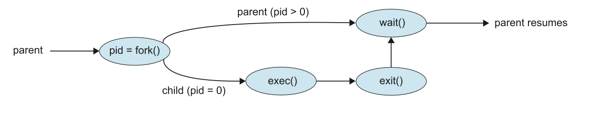
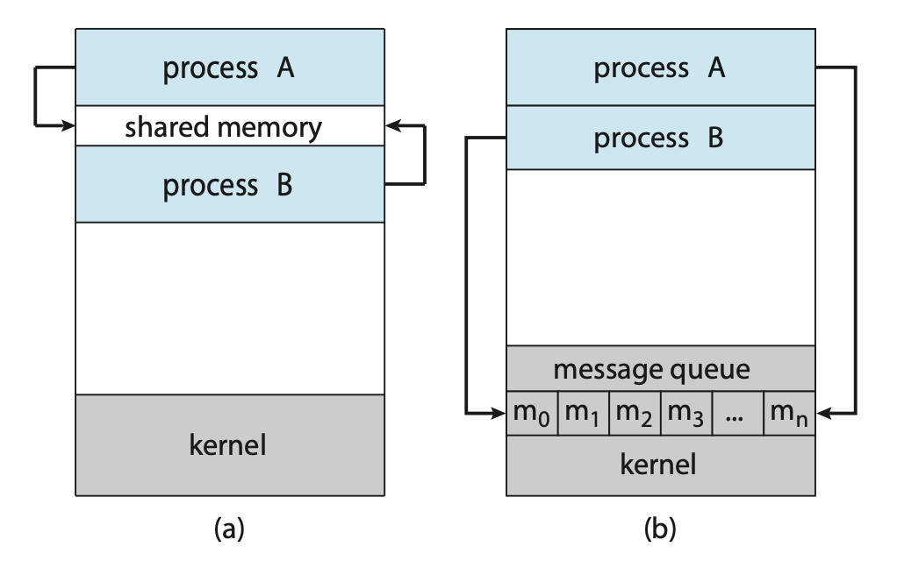

CAB403 Study Guide | 2023 Semester 1
Timothy Chappell | Notes for CAB403 at the Queensland University of Technology
Unit Description
Disclaimer
Everything written here is based off the QUT course content and the recommended text books. If any member of the QUT staff or a representative of such finds any issue with these guides please contact me at jeynesbrook@gmail.com.
Week 1
Operating Systems
What is an Operating System
An operating system is a program that acts as an intermediary between a user of a computer and the computer hardware. It's acts as a resource allocator managing all resources and decides between conflicting requests for efficient and fair resource use. An OS also controls the execution of programs to prevent errors and improper use of the computer.
The operating system is responsible for:
- Executing programs
- Make solving user problems easier
- Make the computer system convenient to use
- Use the computer hardware in an efficient manner
Computer System Structure
Computer systems can be divided into four main components
- Hardware: These items provide basic computing resources, i.e. CPU, memory, I/O devices.
- Operating system: Controls and coordinates the use of hardware among various applications and users.
- Application programs: These items define the ways in which the system resources are used to solve the computing problems of the use, i.e. word processors, compilers, web browsers, database systems, video games.
- Users: People, machines, or other computers.
Computer Startup
A bootstrap program is loaded at power-up or reboot. This program is typically stored in ROM or EPROM and is generally know as firmware. This bootstrap program is responsible for initialising all aspects of the system, loading the operating system kernel, and starting execution.
Computer System Organisation
- I/O devices and the CPU can execute concurrently.
- Each device controller is in charge of a particular device type and has a local buffer.
- The CPU moves data from/to the main memory to/from local buffers.
- I/O is from the device to the local buffer of a particular controller.
- The device controller informs the CPU that it has finished its operation by causing an interrupt.
Common Functions of Interrupts
Operating systems are interrupt driven. Interrupts transfer control to the interrupt service routine. This generally happens through the interrupt vector which contains the addresses of all the service routines. The interrupt architecture must save the address of the interrupted instruction.
A trap or exception is a software-generated interrupt caused by either an error or a user request.
Interrupt Handling
The operating systems preserves the state of the CPU by storing registers and the program counter. It then determines which type of interrupt occured, polling or vectored interrupt system.
Once determined what caused the interrupt, separate segments of code determine what action should be taken for each type of interrupt.
Figure: Interrupt timeline for a single program doing output.
I/O Structure
There are two ways I/O is usually structured:
- After I/O starts, control returns to the user program only upon I/O completion.
- Wait instructions idle the CPU until the next interrupt.
- At most, one I/O request is outstanding at a time. This means no simultaneous I/O processing.
- After I/O starts, control returns to the user program without waiting for I/O
completion.
- System call: Request to the OS to allow users to wait for I/O completion.
- A device-status table containes entries for each I/O device indicating its type, address, and state.
- The OS indexes into the I/O device table to determine the device status and to modify a table entry to include an interrupt.
Storage Definitions and Notation Review
The basic unit of computer storage is a bit. A bit contains one of two values, 0 and 1. A byte is 8 bits, and on most computers is the smallest convenient chunck of storage.
- A kilobyte, or KB, is \(1,024\) bytes
- A megabyte, or MB, is \(1,024^2\) bytes
- A gigabyte, or GB, is \(1,024^3\) bytes
- A terabyte, or TB, is \(1,024^4\) bytes
- A petabyte, or PB, is \(1,024^5\) bytes
Direct Memory Access Structure
This method is used for high-speed I/O devices able to transmit information at close to memory speeds. Device controllers transfer blocks of data from buffer storage directly to main memory without CPU intervention. This means only one interrupt is generated per block rather than the one interrupt per byte.
Storage Structure
- Main memory: Only large storage media that the CPU can access directly.
- Random access
- Typically volatile
- Secondary storage: An extension of main memory that provides large non-volatile storage capacity.
- Magnetic discs: Rigid metal or glass platters covered with magnetic recording material. The disk surface is logically divided into tracks which are sub-diveded into sectors. The disk controller determines the logical interaction between the device and the computer.
- Solid-state disks: Achieves faster speeds than magnetic disks and non-volatile storage capacity through various technologies.
Storage Hierarchy
Storages systems are organised into a hierarchy:
- Speeds
- Cost
- Volatility.
There is a device driver for each device controller used to manage I/O. They provide uniform interfaces between controllers and the kernel.
Caching
Caching allows information to be copied into a faster storage system. The main memory can be viewed as a cache for the secondary storage.
Faster storage (cache) is checked first to determine if the information is there:
- If so, information is used directly from the cache
- If not, data is copied to the cache and used there
The cache is usually smaller and more expensive that the storage being cached. This means cache management is an important design problem.
Computer-System Architecture
Most systems use a single general-purpose processor. However, most systems have special-purpose processors as well.
Multi-processor systems, also known as parallel systems or tightly-coupled systems, usually come in two types; Asymmetric Multi-processing or Symmetric Multi-processor. Multi-processor systems have a few advantages over a single general-purpose processor:
- Increase throughput
- Economy of scale
- Increased reliability, i.e. graceful degradation or fault tolerance
Clustered Systems
Clustered systems are like Multi-processor systems, they have multiple systems working together.
- These systems typically share storage via a storage-area network (SAN).
- Provide a high-availability service which survices failures:
- Asymmetric clustering have one machine in hot-standby mode.
- Symmetric clustering have multiple nodes running applications, monitoring each other.
- Some clusters are for high-performance computing (HPC). Applications running on these clusters must be written to use parallelisation.
- Some have a distributed lock manager (DLM) to avoid conflicting operations.
Operating System Structure
Multi-programming organises jobs (code and data) so the CPU always has one to execute. This is needed for efficiency as a single user cannot keep a CPU and I/O devices busy at all times. Multi-programming works by keeping a subset of total jobs in the system, in memory. One job is selected and run via job scheduling. When it has to wait (for I/O for example), the OS will switch to another job.
Timesharing is a logical extension in which the CPU switches jobs so frequently that users can interact with each job while it is running.
- The response time should be less than one second.
- Each user has at least one program executing in memory (process).
- If processes don't fit in memory, swapping moves them in and out to run.
- Virtual memory allows execution of processes not completely in memory.
- If several jobs are ready to run at the same time, the CPU scheduler handles which to run.
Operating-System Operations
Dual-mode operations (user mode and kernel mode) allow the OS to protect itself and other system components. A mode bit provided by the hardware provides the ability to distinguish when a system is running user code or kernel code. Some instructions are designated as privileged and are only executable in kernel mode. System calls are used to change the mode to kernel, a return from call resets the mode back to user.
Most CPUs also support multi-mode operations, i.e. virtual machine manages (VMM) mode for guest VMs.
Input and Output
printf()
printf() is an output function included in stdio.h. It outputs a character
stream to the standard output file, also known as stdout, which is normally
connected to the screen.
It takes 1 or more arguments with the first being called the control string.
Format specifications can be used to interpolate values within the string. A
format specification is a string that begins with % and ends with a conversion
character. In the above example, the format specifications %s and %d were used.
Characters in the control string that are not part of a format specification are
placed directly in the output stream; characters in the control string that are
format specifications are replaced with the value of the corresponding argument.
Example 1: Output with printf()
printf("name: %s, age: %d\n", "John", 24); // "name: John, age: 24"
scanf()
scanf() is an input function included in stdio.h. It reads a series of characters
from the standard input file, also known as stdin, which is normally connected
to the keyboard.
It takes 1 or more arguments with the first being called the control string.
Example 2: Reading input with scanf()
char a, b, c, s[100];
int n;
double x;
scanf("%c%c%c%d%s%lf", &a, &b, &c, &n, n, &x);
Relevant Links
Pointers
A pointer is a variable used to store a memory address. They can be used to access memory and manipulate an address.
Example 1: Various ways of declaring a pointer
// type *variable;
int *a;
int *b = 0;
int *c = NULL;
int *d = (int *) 1307;
int e = 3;
int *f = &e; // `f` is a pointer to the memory address of `e`
Example 2: Dereferencing pointers
int a = 3;
int *b = &a;
printf("Values: %d == %d\nAddresses: %p == %p\n", *b, a, b, &a);
Relevant Links
Functions
A function construct in C is used to write code that solves a (small) problem.
A procedural C program is made up of one or more functions, one of them being
main(). A C program will always begin execution with main().
Function parameters can be passed into a function in one of two ways; pass by value and pass by reference. When a parameter is passed in via value, the data for the parameters are copied. This means any changes to said variables within the function will not affect the original values passed in. Pass by reference on the other hand passes in the memory address of each variable into the function. This means that changes to the variables within the function will affect the original variables.
Example 1: Function control
#include <stdio.h>
void prn_message(const int k);
int main(void) {
int n;
printf("There is a message for you.\n");
printf("How many times do you want to see it?\n");
scanf("%d", &n);
prn_message(n);
return 0;
}
void prn_message(const int k) {
printf("Here is the message:\n");
for (size_t i = 0; i < k; i++) {
printf("Have a nice day!\n");
}
}
Example 2: Pass by values
#include <stdio.h>
void swapx(int a, int b);
int main(void) {
int a = 10;
int b = 20;
// Pass by value
swapx(a, b);
printf("within caller - a: %d, b: %b\n", a, b); // "within caller - a: 10, b: 20"
return 0;
}
void swapx(int a, int b) {
int temp;
temp = a;
a = b;
b = temp;
printf("within function - a: %d, b: %b\n", a, b); // "within function - a: 20, b: 10"
}
Example 3: Pass by value
#include <stdio.h>
void swapx(int *a, int *b);
int main(void) {
int a = 10;
int b = 20;
// Pass by reference
swapx(&a, &b);
printf("within caller - a: %d, b: %b\n", a, b); // "within caller - a: 20, b: 10"
return 0;
}
void swapx(int *a, int *b) {
int temp;
temp = *a;
*a = *b;
*b = temp;
printf("within function - a: %d, b: %b\n", *a, *b); // "within function - a: 20, b: 10"
}
Example 4: Function pointers
#include <stdio.h>
void function_a(int num) {
printf("Function A: %d\n", num);
}
void function_b(int num) {
printf("Function B: %d\n", num);
}
void caller(void (*function) (int)) {
function(1);
function(2);
function(3);
}
int main(void) {
caller(function_a);
caller(function_b);
return 0;
}
Week 2
Operating System Structures
Operating System Services
Operating systems provide an environment for execution of programs and services to programs and users.
There are many operating system services that provide functions that are helpful to the user such as:
- User interface: Almost all operating systems have a user interface. This can be in the form of a graphical user interface (GUI) or a command-line (CLI).
- Program execution: The system must be able to load a program into memory and run that program, end execution, either normally or abnormally.
- I/O operations: A running program may require I/O, which may involve a file or an I/O device.
- File-system manipulation: The file system is of particular interest. Programs need to read and write files and directories, create and delete them, search them, list file information, manage permissions, and more.
- Communication: Processors may exchange information, on the same computer or between computers over a network.
- Error detection: OS needs to be constantly aware of possible errors:
- May occur in the CPU and memory hardware, in I/O devices, in user programs, and more.
- For each type of error, the OS should take the appropriate action to ensure correct and consistent computing.
- Debugging facilities can greatly enhance the user's and programmer's abilities to efficiently use the system.
Another set of OS functions exist for ensuring the efficient operation of the system itself via resource sharing.
- Resource allocation: When multiple users or multiple jobs are running concurrently, resources must be allocated to each of them.
- Accounting: To keep track of which users use how much and what kinds of resources.
- Protection and security: The owners of information stored in a multi-user
or networked computer system may want to control use of that information. Concurrent
processes should not interfere with each other.
- Protection involves ensuring that all access to system resources is controlled.
- Security of the system from outsiders requires user authentication. This also extends to defending external I/O devices from invalid access attempts.
- If a system is to be protected and secure, pre-cautions must be instituted throughout it. A chain is only as strong as its weakest link.
System Calls
System calls provide an interface to the services made available by an operating system. These calls are generally written in higher-level languages such as C and C++. These system calls however, are mostly accessed by programs via a high-level application programming interface (API) rather than direct system call use.
The three most common APIs are Win32 API for Windows, POSIX API for POSIX-based systems, and JAVA API for the Java virtual machine (JVM)
Typically, a number is associated with each system call. The system-call interface maintains a table indexed according to these numbers. The system call interface invokes the intended system call in the OS kernel and returns a status of the systema call and any return values. The caller needs to know nothing about how the system call is implemented, it just needs to obey the API and understand what the OS will do as a result call.
Figure: The handling of a user application invoking the open() system call.
There are many types of system calls:
- Process control
- File management
- Device management
- Information maintenance
- Communications
- Protection
Often, more information is required than simply the identity of the system call. There are three general methods used to pass parameters to the OS:
- Pass parameters into registers. This won't always work however as there may be more parameters than registers.
- Store parameters in a block, or table, in memory, and pass the address of the block as a parameter in a register.
- Parameters are placed, or pushed, onto the stack by the program and popped off the stack by the operating system. This method does not limit the number length of the parameters being passed.
 Figure: Passing of parameters as a table.
Figure: Passing of parameters as a table.
System Programs
System programs provide a convenient environment for program development and execution. They can be generally divided into:
- File manipulation
- Status information sometimes stored in a file modification
- Programming language support
- Program loading and execution
- Communications
- Background services
- Application programs
UNIX
UNIX is limited by hardware functionality. The original UNIX operating system had limited structing. The UNIX OS consists of two separable parts:
- Systems programs
- The kernel:
- Consists of everything below the system-call interface and above the physical hardware.
- Provides the file system, CPU scheduling, memory management, and other operating-system functions.
Operating System Structure
There are a few ways to organise an operating system.
Layered
The operating system is divided into a number of layers, each built on top of the lower layers. The bottom layer (layer 0), is the hardware; the highest is the user interface.
Due to the modularity, layers are selected such that each uses functions and services of only lower-level layers.
 Figure: A layered operating system.
Figure: A layered operating system.
Microkernel System
In this organisation method, as much as possible is moved from the kernel into user space. An example OS that uses a microkernel is Mach, which parts of the MacOSX kernel (Darwin) is based upon. Communication takes place between user modules via message passing.
| Advantages | Disadvantages |
|---|---|
| Easier to extend a microkernel | Performance overhead of user space to kernel space communication |
| Easier to port the operating system to new architectures | |
| More reliable (less code is running in kernel mode) | |
| More secure |
 Figure: Architecture of a typical microkernel.
Figure: Architecture of a typical microkernel.
Hybrid System
Most modern operating systems don't use a single model but a use concepts from a variety. Hybrid systems combine multiple approaches to address performance, security, and usability needs.
For example, Linux is monolithic, because having the operating system in a single address space provides very efficient performance. However, it's also modular, so that new functionality can be dynamically added to the kernel.
Modules
Most modern operating systems implement loadable kernel modules (LKMs). Here, the kernel has a set of core components and can link in additional services via modules, either at boot time or during run time
Each core component is separate, can talk to others via known interfaces, and is loadable as needed within the kernel.
Arrays
An array is a contiguous sequence of data items of the same type. An array name is an address, or constant pointer value, to the first element in said array.
Aggregate operations on an array are not valid in C, this means that you cannot
assign an array to another array. To copy an array you must either copy it component-wise
(typically via a loop) or via the memcpy() function in string.h.
Example 1: Arrays in practice
#include <stdio.h>
const int N = 5;
int main(void) {
// Allocate space for a[0] to a[4]
int a[N];
int i;
int sum = 0;
// Fill the array
for (i = 0; i < N; i++) {
a[i] = 7 + i * i;
}
// Print the array
for (i = 0; i < N; i++) {
printf("a[%d] = %d\n", i, a[i]);
}
// Sum the elements
for (i = 0; i < N; i++) {
sum += a[i];
}
printf("\nsum = %d\n", sum);
return 0;
}
Example 2: Arrays and Pointers
#include <stdio.h>
const int N = 5;
int main(void) {
int a[N];
int sum;
int *p;
// The following two calls are the same
p = a;
p = &a[0];
// The following two calls are the same
p = a + 1;
p = &a[1];
// Version 1
sum = 0;
for (int i = 0; i < N; i++) {
sum += a[i];
}
// Version 2
sum = 0;
for (int i = 0; i < N; i++) {
sum += *(a + i);
}
}
Example 3: Bubble Sort
#include <stdio.h>
void swap(int *arr, int i, int j);
void bubble_sort(int *arr, int n);
void main(void) {
int arr[] = { 5, 1, 4, 2, 8 };
int N = sizeof(arr) / sizeof(int);
bubble_sort(arr, N);
for (int i = 0; i < N; i++) {
printf("%d: %d\n", i, arr[i]);
}
return 0;
}
void swap(int *arr, int i, int j) {
int temp = arr[i];
arr[i] = arr[j];
arr[j] = temp;
}
void bubble_sort(int *arr, int n) {
for (int i = 0; i < n - 1; i++) {
for (int j = 0; j < n - 1; j++) {
if (arr[j] > arr[j + 1]) {
swap(arr, j, j + 1);
}
}
}
}
Example 4: Copying an Array
#include <stdio.h>
#include <string.h>
int main(void) {
// Copying an array component-wise
int array_one[5] = { 1, 2, 3, 4, 5 };
int array_two[5];
for (int idx = 0; idx < 5; idx++) {
array_two[idx] = array_one[idx];
}
// Copying an array via memcpy
memcpy(array_two, array_one, sizeof(int) * 5);
}
Relevant Links
Strings
A string is a one-dimensional array of type char. All strings must end with a
null character \0 which is a byte used to represent the end of a string.
A character in a string can be accessed either by an element in an array of by making use of a pointer.
Example 1: Strings in practice
char *first = "john";
char last[6];
last[0] = 's';
last[1] = 'm';
last[2] = 'i';
last[3] = 't';
last[4] = 'h';
last[5] = '\0';
printf("Name: %s, len: %lu", first, strlen(first));
Relevant Links
Structures
Structures are named collections of data which are able to be of varying types.
Example 1: Structures in practice
struct student {
char *last_name;
int student_id;
char grade;
};
// By using `typedef` we can avoid prefixing the type with `struct`
typedef struct unit {
char *code;
char *name;
} unit;
void update_student(struct student *student);
void update_grade(unit *unit);
int main(void) {
struct student s1 = {
.last_name = "smith",
.student_id = 119493029,
.grade = 'B',
};
s1.grade = 'A';
update_student(&s1);
unit new_unit;
new_unit.name = "Microprocessors and Digital Systems";
update_unit(&new_unit);
}
void update_student(struct student *student) {
// `->` shorthand for dereference of struct
student->last_name = "doe";
student->grade = 'C';
}
void update_unit(unit *unit) {
// `->` shorthand for dereference of struct
unit->code = "CAB403";
unit->name = "Systems Programming";
}
Relevant Links
Dynamic Memory Management
Memory in a C program can be divided into four categories:
- Code memory
- Static data memory
- Runtime stack memory
- Heap memory
Code Memory
Code memory is used to store machine instructions. As a program runs, machine instructions are read from memory and executed.
Static Data Memory
Static data memory is used to store static data. There are two categories of static data: global and static variables.
Global variables are variables defined outside the scope of any function as
can be seen in example 1. Static variables on the other hand are defined with
the static modifier as seen in example 2.
Both global and static variables have one value attached to them; they are
assigned memory once; and they are initialised before main begins execution
and will continue to exist until the end of execution.
Example 1: Global variables.
int counter = 0;
int increment(void) {
counter++;
return counter;
}
Example 2: Static variables.
int increment(void) {
// will be initialised once
static int counter = 0;
// increments every time the function is called
counter++;
return counter;
}
Runtime Stack Memory
Runtime stack memory is used by function calls and is FILO (First in, Last out). When a function is invoked, a block of memory is allocated by the runtime stack to store the information about the function call. This block of memory is termed as an Activation Record.
The information about the function call includes:
- Return address.
- Internal registers and other machine-specific information.
- Parameters.
- Local variables.
Heap Memory
Heap memory is memory that is allocated during the runtime of the program. On many systems, the heap is allocated in an opposite direction to the stack and grows towards the stack as more is allocated. On simple systems without memory protection, this can cause the heap and stack to collide if too much memory is allocated to either one.
To deal with this, C provides two functions in the standard library to handle
dynamic memory allocation; calloc() (contiguous allocation) and malloc()
(memory allocation).
void *calloc(size_t n, size_t s) returns a pointer to enough space in memory
to store n objects, each of s bytes. The storage set aside is automatically
initialised to zero.
void *malloc(size_t s) returns a pointer to a space of size s and leaves the
memory uninitialised.
Example 3: malloc() and calloc()
#include <stdio.h>
#include <stdlib.h>
int main() {
int num_of_elements;
int *ptr;
int sum = 0;
printf("Enter number of elements: ");
scanf("%d", &num_of_elements);
ptr = malloc(num_of_elements * sizeof(int));
// or
// ptr = calloc(num_of_elements, sizeof(int));
if (ptr == NULL) {
printf("[Error] - Memory was unable to be allocated.");
exit(0);
}
printf("Enter elements: ");
for (int i = 0; i < n; i++) {
scanf("%d", ptr + i);
sum += *(ptr + i);
}
printf("Sum = %d", sum);
free(ptr);
return 0;
}
Relevant Links
Week 3
Processes
An operating system executes a variety of programes either via:
- Batch systems (jobs)
- or Time-shared systems (user programs or tasks)
A process, sometimes referred to as a job, is simply a program in execution. The status of the current activity of a process is represented by the value of the program counter and the contents of the processors registers.
A process is made up of multiple parts:
- Text section: The executable code
- Data section: Global variables
- Heap section: Memory that is dynamically allocated during program run time
- Stack section: Temporary data storage when invoking functions (such as function parameters, return addresses, and local variables)
It's important to note that a program itself is not a process but rather a passive entity. In contrast, a process is an active entity, with a program counter specifying the next instruction to execute and a set of associated resources.
As a process executes, it changes state. A process may be in one of the following states:
- new: The process is being created.
- running: Instructions are being executed.
- waiting: The process is waiting for some event to occur.
- ready: The process is waiting to be assigned to a processor.
- terminated: The process has finished execution.
 Figure: Diagram of process state.
Figure: Diagram of process state.
Process Control Block (PCB)
Each process is represented in the OS by a process control block, also known as a task control block. It contains information associated with a specific process such as:
- Process state: The state of the process.
- Program counter: The address of the next instruction to be executed for this process.
- CPU registers: The contents of all process-centric registers. Along with the program counter, this state information must be saved when an interrupt occurs, to allow the process to be continued correctly afterward when it is rescheduled to run.
- CPU scheduling information: Information about process priority, pointers to scheduling queues, and any other scheduling parameters.
- Memory-management information: This information may include such items as the value of the base and limit registers and the page tables, or the segment tables, depending on the memory system used by the operating system.
- Accounting information: This information includes the amount of CPU and real time used, time limits, account numbers, job or process numbers, etc..
- I/O status information: This information includes the list of I/O devices allocated to the process, a list of open files, etc..
Threads
In a single-threaded model, only a single thread of instructions can be executed. This means only a single tasks can be completed at any given time. For example, in a word document, the user cannot simultaneously type in characters and run the spell checker.
In most modern operating systems however, the use of multiple threads allows more than one task to be performed at any given moment. A multithreaded word processor could, for example, assign one thread to manage user input while another thread runs the spell checker.
In a multi-threaded system, the PCB is expanded to include information for each thread.
Process Scheduling
The objective of multi-programming is to have some process running at all times so as to maximize CPU utilization. A process scheduler is used to determine which process should be executed. The number of processes currently in memory is known as the degree of multiprogramming
When a process enters the system, it's put into a ready queue where it then waits to be executed. When a process is allocated a CPU core for execution it executes for a while and eventually terminates, is interrupted, or waits for the occurrence of a particular event. Any process waiting for an event to occur gets placed into a wait queue.
 Figure: Queueing-diagram representation of process scheduling.
Figure: Queueing-diagram representation of process scheduling.
Most processos can be described as either:
- I/O bound: A I/O bound process that spends more of its time doing I/O operations.
- CPU bound: Spends more of its time doing more calculations with infrequent I/O requests.
Context Switch
Interrupts cause the operating system to change a CPU core from its current task and to run a kernel routine. These operations happen frequently so it's important to ensure that when returning to the process, no information was lost.
Switching the CPU core to another process requires performing a state save of the current process and a state restore of a different process. This task is known as a context switch. When a context switch occurs, the kernel saves the context of the old process in its PCB and loads the saved context of the new process scheduled to run.
The time between a context switch is considered as overhead as no useful work is done while switching. The more complex the OS and PCB, the longer it takes to context switch.
Process Creation
During execution, a process may need to create more processes. The creating process is called a parent process, and the new processes are called the children of that process. Each of these new processes may in turn create other processes, forming a tree of processes. Processes are identified by their process identifier (PID).
When a process is created, it will generally require some amount of resources to accomplish its task. A child process may be able to obtain its resources directly from the operating system, or it may be constrained to a subset of the resources of the parent process.
When a process creates a new process, two possibilities for execution exist:
- The parent continues to execute concurrently with its children.
- The parent waits until some or all of its children have terminated.
There are also two address-space possibilities for the new process:
- The child process is a duplicate of the parent process (it has the same program and data as the parent).
- The child process has a new program loaded into it.
A new process is created by the fork() system call. The new process consists
of a copy of the address space of the original process. The return code for the
fork() is zero for the new (child) process, whereas the (nonzero) process identifier
of the child is returned to the parent.
Once forked, it's typical for exec() to be called on one of the two processes.
The exec() system call loads a binary file into memory (destroying the memory
image of the program containing the exec() system call) and starts its execution.
For example, this code forks a new process and, using execlp(), a version of
the exec() system call, overlays the process address space with the UNIX command
/bin/ls (used to get a directory listing).
#include <sys/types.h>
#include <sys/wait.h>
#include <stdio.h>
#include <unistd.h>
int main() {
pid_t pid;
/* fork a child process */
pid = fork();
if (pid < 0) { /* error occurred */
fprintf(stderr, "Fork failed\n");
return 1;
} else if (pid == 0) { /* child process */
execlp("/bin/ls", "ls", NULL);
} else { /* parent process */
/* parent will wait for the child to complete */
wait(NULL);
printf("Child complete\n");
}
return 0;
}
 Figure: Process creation using the fork() system call.
Process Termination
A process terminates when it finishes executing its final statement and asks the
operating system to delete it by using the exit() system call. At that point,
the process may return a status value (typically an integer) to its waiting parent
process (via the wait() system call).
A parent may terminate the execution of one of its children for a variety of reasons, such as:
- The child has exceeded its usage of some of the resources that it has been allocated.
- The task assigned to the child is no longer required.
- The parent is exiting, and the operating system does not allow a child to continue if its parent terminates.
A parent process may wait for the termination of a child process by using the
wait() system call. The wait() system call is passed a parameter that allows
the parent to obtain the exit status of the child. This system call also returns
the process identifier of the terminated child so that the parent can tell which
of its children has terminated:
pid t pid;
int status;
pid = wait(&status);
When a process terminates, its resources are deallocated by the operating system.
However, its entry in the process table must remain there until the parent calls
wait(), because the process table contains the processs exit status.
If a child process is terminated but the parent has not called wait(), the process
is known as a zombie process. If a parent is terminated before calling wait(), the process
is know as an orphan.
Interprocess Communication
Processes within a system may be independent or cooperating. A process is cooperating if it can affect or be affected by the other processes executing in the system.
There are a variety of reasons for providing an environment that allows process cooperation:
- Information sharing
- Computational speedup
- Modularity
- Convenience
Cooperating processes require an interprocess communication (IPC) mechanism that will allow them to exchange data. There are two fundamental models of interprocess communication: shared memory and message passing.
 Figure: Communications models. (a) Shared memory. (b) Message passing.
In the shared-memory model, a region of memory that is shared by the cooperating processes is established. Processes can then exchange information by reading and writing data to the shared region. In the message-passing model, communication takes place by means of messages exchanged between the cooperating processes.
Producer-Consumer Problem
The Producer-Consumer problem is a common paradigm for cooperating processes. A producer process produces information that is consumed by a consumer process.
One solution to the producerconsumer problem uses shared memory. To allow producer and consumer processes to run concurrently, we must have available a buffer of items that can be filled by the producer and emptied by the consumer. This buffer will reside in a region of memory that is shared by the producer and consumer processes.
Two types of buffers can be used. The unbounded buffer places no practical limit on the size of the buffer. The consumer may have to wait for new items, but the producer can always produce new items. The bounded buffer assumes a fixed buffer size. In this case, the consumer must wait if the buffer is empty, and the producer must wait if the buffer is full.
Message Passing
Message passing provides a mechanism to allow processes to communicate and to synchronize their actions without sharing the same address space.
A message-passing facility provides at least two operations:
send(message)receive(message)
Before two processes can communicate, they first need to establish a communication link.
This could be via physical hardware:
- Shared memory.
- Hardware bus.
or logical:
- Direct or indirect communication.
- Synchronous or asynchronous communication.
- Automatic or explicit buffering.
Direct Communication
Under direct communication, each process that wants to communicate must explicitly name the recipient or sender of the communication.
send(P, message)- send a message to process P.receive(Q, message)- receive a message from process Q.
A communication link in this scheme has the following properties:
- A link is established automatically.
- The processes need to know only each others identity to communicate.
- A link is associated with exactly two processes.
- Between each pair of processes, there exists exactly one link.
Indirect Communication
With indirect communication, the messages are sent to and received from mailboxes, or ports. A mailbox can be viewed abstractly as an object into which messages can be placed by processes and from which messages can be removed. Each mailbox has a unique identification.
send(A, message)Send a message to mailbox A.receive(A, message)Receive a message from mailbox A.
The operating system then must provide a mechanism that allows a process to do the following:
- Create a new mail box.
- Send and receive messages through the mailbox.
- Delete a mail box.
In this scheme, a communication link has the following properties:
- A link is established between a pair of processes only if both members of the pair have a shared mailbox.
- A link may be associated with more than two processes.
- Between each pair of communicating processes, a number of different links may exist, with each link corresponding to one mailbox.
Now suppose that processes \(P_1\), \(P_2\), and \(P_3\) all share mailbox A.
Process \(P_1\) sends a message to A, while both \(P_2\) and \(P_3\) execute
a receive() from A. Which process will receive the message sent by \(P_3\)?
The answer depends on which of the following methods we choose:
- Allow a link to be associated with at most two processes
- Allow only one process at a time to execute a receive operation
- Allow the system to select arbitrarily the receiver. Sender is notified who the receiver was.
Synchronisation
Communication between processes takes place through calls to send() and receive()
primitives. Message passing may be either blocking or nonblocking also known as
synchronous and asynchronous.
- Blocking send: The sending process is blocked until the message is received by the receiving process or by the mailbox.
- Nonblocking send: The sending process sends the message and resumes operation.
- Blocking receive: The receiver blocks until a message is available.
- Nonblocking receive: The receiver retrieves either a valid message or a null.
Different combinations of send() and receive() are possible. When both send()
and receive() are blocking, we have a rendezvous between the sender and the
receiver.
Buffering
Whether communication is direct or indirect, messages exchanged by communicating processes reside in a temporary queue. These queues can be implemented in three ways:
- Zero capacity: The queue has a maximum length of zero; thus, the link cannot have any messages waiting in it. In this case, the sender must block until the recipient receives the message.
- Bounded capacity: The queue has finite length \(n\); thus, at most \(n\) messages can reside in it. If the queue is not full when a new message is sent, the message is placed in the queue (either the message is copied or a pointer to the message is kept), and the sender can continue execution without waiting. The links capacity is finite, however. If the link is full, the sender must block until space is available in the queue.
- Unbounded capacity: The queues length is potentially infinite; thus, any number of messages can wait in it. The sender never blocks.
Week 4
Threads
A thread is a basic unit of CPU utilisation. A thread consists of:
- A thread ID
- A program counter PC
- A register set
- A stack
A thread shares it's code section, data section, and other operating-system resources with others threads within the same process. A traditional process usually consists of a single thread of control, this is called a single-threaded process. A process with multiple threads of control can therefore perform more than one task at any given moment, this is called a multi-threaded process.
Figure: Single-threaded and multithreaded processes.
Most programs that run on modern computers and mobile devices are multithreaded. For example, A word processor may have a thread for displaying graphics, another thread for responding to keystrokes from the user, and a third thread for performing spelling and grammar checking in the background.
In certain situations, a single application may be required to perform several tasks at any one time. For example, a web server needs to accept many client requests concurently. A solution to this is to have the server run a single process that accepts requests. When a request is recieved, a new process is created to service the request. Before threads became popular, this was the most common way to handle such situation.
The problem with this however is that processes are expensive to create. If the new process will perform the same tasks as the existing process, why incur the overhead of creating another. If a web server is multithreaded, the server will create a separate thread that listens for client requests. When a new requests comes in, the server will create a new thread to service the requests and resume listening for more requests.
 Figure: Multithreaded server architecture.
Figure: Multithreaded server architecture.
Most operating system kernels are also typically multithreaded. During system boot time on Linux systems, several kernel threads are created to handle tasks such as managing devices, memory management, and interrupt handling.
There are many benefits to using a multithreaded programming approach:
- Responsiveness: Multithreading an interactive application may allow a program to continue running even if part of it is blocked or is performing a lengthy operation.
- Resouce sharing: Processes can share resources only through techniques such as shared memory and message passing. However, threads share the memory and the resources of the process to which they belong by default.
- Economy: Allocating memory and resources for process creation is costly. Because threads share the resources of the process to which they belong, it is more economical to create and context-switch threads.
- Scalability: The benefits of multithreading can be even greater in a multiprocessor architecture, where threads may be running in parallel on different processing cores.
Multicore Programming
Due to the need for more computing performance, single-CPU systems evolved into multi-CPU systems. A trend in system design was to place multiple computing cores on a single processing chip where each core would then appear as a separate CPU to the operating system, such systems are referred to as multicore systems.
Imagine an application with four threads. On a system with a single computing core, concurrency merely means that the execution of the threads will be interleaved over time due to the processing core only being capable of executing a single thread at a time.
Figure: Concurrent execution on a single-core system.
On a system with multiple cores, concurrency means that some threads can run in parallel due to the system being capable of assigning a separate thread to each core.
Figure: Parallel execution on a multicore system.
Types of Parallelism
There are two types of parallelism:
- Data parallelism: Focuses on distributing subsets of the same data across multiple computing cores and performing the same operation on each core.
- Task parallelism: Involves distributing not data but tasks (threads) across multiple computing cores. Each thread is performing a unique operation. Diferent threads may be operating on the same data, or they may be operating on different data.
It's important to note that these two methods are not mutually exclusive and an application may use a hybrid method of both strategies.
Multithreading Models
Support for threads may be provided either at the user level (user threads) or by the kernel (kernel threads). User threads are supported above the kernel and are managed without kenel support. Kernel threads on the other hand are supported and managed directly by the operating system.
There are three common relationships between user threads and kernel threads.
- Many-to-One Model: The many-to-one model maps many user-level threads to one kernel thread. Thread management is done by the thread library in user space, so it is efficient. However, the entire process will block if a thread makes a blocking system call. Also, because only one thread can access the kernel at a time, multiple threads are unable to run in parallel on multicore systems.

Figure: Many-to-one model.
- One-to-One Model: The one-to-one model maps each user thread to a kernel thread. It provides more concurrency than the many-to-one model by allowing another thread to run when a thread makes a blocking system call. It also allows multiple threads to run in parallel on multiprocessors. The only drawback to this model is that creating a user thread requires creating the corresponding kernel thread, and a large number of kernel threads may burden the performance of a system.
Figure: One-to-one model.
- Many-to-Many Model: The many-to-many model (Figure 4.9) multiplexes many user-level threads to a smaller or equal number of kernel threads. Although the many-to-many model appears to be the most flexible of the models discussed, in practice it is difficult to implement.

Figure: Many-to-many model.
Creating Threads
There are two general strategies forr creating multiple threads:
- Asynchronous threading: Once the parent creates a child thread, the parent resumes its execution, so that the parent and child execute concurrently and independently of one another.
- Synchronous threading: The parent thread creates one or more children and then must wait for all of its children to terminate before it resumes. Here, the threads created by the parent perform work concurrently, but the parent cannot continue until this work has been completed. Once each thread has finished its work, it terminates and joins with its parent. Only after all of the children have joined can the parent resume execution.
Pthreads
Pthreads refers to the POSIX standard (IEEE 1003.1c) defining an API fo thread creation and synchronisation. It's important to know that Pthreads is simply a specification for thread behaviour and not an implementation, that is left up to the operating-system designers.
Below is an example application using Ptheads to calculate the summation of a non-negative integer in a separate thread.
#include <pthread.h>
#include <stdio.h>
#include <stdlib.h>
int sum; // The data shared among the threads.
void *runner(void *param); // The function called by each thread.
int main(int argc, char *argv[]) {
pthread_t tid; // The thread identifier.
pthread_attr_t attr; // Set of thread attributes.
// Set the default attributes of the thread.
pthread_attr_init(&attr);
// Create the thread.
pthread_create(&tid, &attr, runner, argv[1]);
// Wait for the thead to finish executing.
pthead_join(tid, NULL);
printf("Sum: %d\n", sum);
}
void *runner(void *param) {
int upper = atoi(param);
int sum = 0;
for (int i = 1; i <= upper; i++) {
sum += 1;
}
pthread_exit(0);
}
This example program creates only a single thread. With the growing dominance of
multicore systems, writing programs containing several threads has become increasingly
common. A simple method for waiting on several threads using the pthread_join()
function is to enclose the operation within a simple for loop.
#define NUM_THREADS 10
pthread_t workers[NUM_THREADS];
for (int i = 0; i < NUM_THREADS; i++) {
pthread_join(workers[i], NULL);
}
Thread Pools
The idea behing a thread pool is to create a number of threads at start-up and place them into a pool where they sit and wait for work. In the context of a web server, when a request is recieved, rather than creating a new thread, it instead submits the request to the thread pool and resumes waiting for additional requests. Once the thread completes its service, it returns to the pool and awaits more work.
A thread pool has many benefits such as:
- Servicing a equest within an existing thead is often faster than waiting to create a new thread.
- A thread pool limits the number of threads that exist at any one point. This ensures that the system does not get overwhelmed when creating more threads than it can handle.
- Separating the task to be performed from the mechanics of creating the task allows us to use different strategies for running the task. For example, the task could be scheduled to execute after a time delay or to execute periodically.
The number of threads in the pool can be set heuristically based on factors such as the number of CPUs in the system, amount of physical memory, and the expected number of concurrent client requests. More sophisticated thread pool architectures are able to dynamically adjust the number of threads in the pool based off usage patterns.
Fork Join
The fork-join method is one in which when the main parent thread creates one or more child threads and then waits for the children to terminate and join with it.
This synchronous model is often characterised as explicit thread creation, but it is also an excellent candidate for implicit threading. In the latter situation, threads are not constructed directly during the fork stage; rather, parallel tasks are designated. A library manages the number of threads that are created and is also responsible for assigning tasks to threads.
Threading Issues
- The
fork()andexec()system calls - Signal handling
- Thread cancellation
- Thread-local storage
- Scheduler activations
Week 5
Synchronisation
A cooperating process is one that can affect or be affected by other processes executing in the system. Cooperating processes can either directly share a logical address space or be allowed to share data through shared memory or message passing. Concurrent access to shared data may result in data inconsistency.
A race condition occurs when several processes access and manipulate the same data concurrently and the outcome of the execution depends on the particular order in which the access takes place.
The Critical-Section Problem
Consider a system of \(n\) processes. Each proces has a segment of code, called the critical section, in which the process may be accessing - and updating - data that is shared with at least one other process. When one process is executing in its critical section, no other process is allowed to execute in its critical section. The critical-section problem is to design a protocol that the processes can use to synchronise their activity so as to cooperatively share data.
Each process must request permission to enter its critical section. The code implementing this request is the entry section. The critical section may be followed by an exit section. The remaining code is the remainder section.
Figure: General structure of a typical process.
A solution to the critical-section problem must satisfy the following three requirements:
- Mutual exclusion: If process \(P_i\) is executing in its critical section, then no other process can be executing in their critical sections.
- Progress: If no process is executing in its critical section and some processes wish to enter their critical sections, then only those processes that are not executing in their remainder sections can participate in deciding which will enter its critical section next, and this selection cannot be postponed indefinitely.
- Bounded waiting: There exists a bound, or limit, on the number of times that other processes are allowed to enter their critical sections after a process has made a request to enter its critical section and before that request is granted.
There are two general approaches used to handle critical sections in operating systems:
- Preemptive kernels: A preemptive kernel allows a process to be preemped while it's running in kernel mode.
- Non-preemptive kernels: A non-preemptive kernel does not allow a process running in kernel mode to be preempted; A kernel-mode process will run until it exits kernel mode, blocks, or voluntarily yields control of the CPU.
A non-preemptive kernel is essentially free from race conditions on kernel data structures as only one process is active in the kernel at a time. Preemptive kernels on the other hand are not and must be carefully designed to ensure that shared kernel data is free from race conditions.
Despite this, preemptive kernels are still preferred as:
- They allow a real-time process to preempt a process currently running in kernel mode
- They are more responsive since there is less risk that a kernel-mode process will run for an arbitrarily long period before relinquishing the processor to waiting processes.
Peterson's Solution
Peterson's solution is a software-based solution to the critical-section problem. Due to how modern computer architectures perform basic machine-language instructions, there are no guarantees that Peterson's solution will work correctly on such architectures.
int turn;
boolean flag[2];
while (true) {
flag[i] = true;
turn = j;
while (flag[j] && turn == j);
// Critical section
flag[i] = false;
// Remainder section
}
Hardware Support for Synchronisation
Memory Barriers
How a computer architecture determines what memory guarantees it will provide to an application program is known as its memory model. A memory model falls into one of two categories:
- Strongly ordered: Where a memory modification on one processor is immediately visible to all other processors.
- Weakly ordered: Where modifications to memory on one processor may not be. immediately visible to other processors.
Memory models vary by processor type, so kernel developers cannot make assumptions regarding the visibility of modifications to memory on a shared-memory multiprocessor. To address this issue, computer architectures provide instructions that can force any changes in memory to be propagated to all other processors. Such instructions are know as memory barriers or memory fences.
When a memory barrier instruction is performed, the system ensures that all loads and stores are completed before any subsequent load or store operations are performed. This ensures that even if instructions were re-ordered, the store operations are completed in memory and visible to other processors before future load or store operations are performed.
Memory barriers are considered very low-level operations are are typically only used by kernel developers when writing specialised code that ensures mutual exclusion.
Hardware Instructions
Many computer systems provide special hardware instructions that allow us either
to test and modify the content of a word or to swap the contents of two words
atomically - that is, as one uninterruptible unit. These special instructions
can be used to solve the critical-section problem. Such examples of these instructions
are test_and_set() and
compare_and_swap.
boolean test_and_set(boolean *target) {
boolean rv = *target;
*target = true;
return rv;
}
Figure: The definition of the atomic test_and_set() instruction.
int compare_and_swap(int *value, int expected, int new_value) {
int temp = *value;
if (*value == expected) {
*value = new_value;
}
return temp;
}
Figure: The definition of the atomic compare_and_swap() instruction.
Atomic Variables
An atomic variable provides atomic operations on basic data types such as integers
and booleans. Most systems that support atomic variables provide special atomic
data types as well as functions for acessing and manipulating atomic variables.
These functions are often implemented using compare_and_swap() operations.
For example, the following increments the atomic integer sequence:
increment(&sequence);
where the increment() function is implemented using the CAS instruction:
void increment(atomic_int *v) {
int temp;
do {
temp = *v;
} while (temp != compare_and_swap(v, temp, temp + 1));
}
It's important to note however that although atomic variables provide atomic updates, they do not entirely solve race conditions in all circumstances.
Mutex Locks
Mutex, short for mutual exclusion, locks are used to protect critical sections and thus prevent race conditions. They act as high-level software tools to solve critical-section problems.
A process must first acquire a lock before entering a critical section; it then
releases the lock when it exits the critical section. The acquire() function
acquires the lock, and the release() function releases the lock. A mutex lock
has a boolean variable available whose value indicates if the lock is available
or not. Calls to either acquire() or release() must be performed atomically.
acquire() {
while (!available); /* busy wait */
available = false;;
}
release() {
available = true;
}
The type of mutex lock described above is also called a spin-lock due to the
process "spinning" while waiting for the lock to become available. The main
disadvantage with spin locks is that they require busy waiting. While a process
is in its critical section, any other process that tries to entir its critical
section must loop continuously in the call to acquire(). This wastes CPU cycles
that some other process might be able to use productively. On the other hand,
spinlocks do have an advantage in that no context switch is required when a process
must wait on a lock.
Semaphores
A semaphore \(S\) is an integer variable that, apart from initialisation, is
accessed only through two standard atomic operations: wait() and signal().
Operating systems often distinguish between counting and binary semaphores. The value of a counting semaphore can range over an unrestricted domain. The value of a binary semaphore can range only between 0 and 1.
Counting semaphores can be used to control access to a given resource consisting
of a finite number of instances. The semaphore is initialised to a number of
resources available. Each process that wishes to use a resource performs a wait()
operation on the semaphore (decrementing the count). When a process releases
resource, it performs a signal() operation (incrementing the count). When the
count for the semaphore goes to 0, all resources are being used. Processes wishing
to use a resource will block until the count becomes greater than 0.
wait(S) {
while (S <= 0); // busy wait
S--;
}
signal (S) {
S++;
}
Figure: Semaphore with busy waiting.
It's important to note that some definitions of the wait() and signal()
semaphore operations, like the example above, present the same problem that
spinlocks do, busy waiting. To overcome this, other definition of these functions
are modified as to when a process executes wait(), it suspends itself rather
than busy waiting. Suspending the process puts it back a waiting queue associated
with the semaphore. Control is then transferred to the CPU scheduler, which selects
another process to execute. A process that is suspended, waiting on a semaphore
\(S\), should be restarted when some other process executes a signal() operation.
A process that is suspended can be restarted by a wakeup() operation which
changes the process from the waiting state to the ready state subsequently placing
it into the ready queue.
typedef struct{
int value;
struct process *list;
} semaphore;
wait(semaphore *S) {
S->value--;
if (S->value < 0) {
add this process to S->list;
block();
}
}
signal(semaphore *S) {
S->value++;
if (S->value <= 0) {
remove a process P from S->list;
wakeup(P);
}
}
Figure: Semaphore without busy waiting.
Monitors
An abstract data type - or ADT - encapsulates data with a set of functions to operate on that data that are independent of any specific implementation of the ADT. A monitor type is an ADT that includes a set of programmer-defined operations that are provided with mutual exclusion within the monitor. The monitor type also declares the variables whose values define the state of an instance of that type, along with the bodies of functions that operate on those variables.
The representation of a monitor type cannot be used directly by the various processes. Thus, a function defined within a monitor can access only those variables declared locally within the monitor and its formal parameters. Similarly, the local variables of a monitor can be accessed by only the local functions.
The monitor construct ensures that only one process at a time is active within
the monitor. Consequently, the programmer does not need to code this synchronization
constraint explicitly. In some instances however, we need to define additional
synchronization mechanisms. These mechanisms are provided by the condition
construct. A programmer who needs to write a tailor-made synchronization scheme
can define one or more variables of type condition. The only operations that can
be invoked on a condition variable are wait() and signal().
The wait() means that the process invoking this operation is suspended until
another process invokes whereas the signal() operation resumes exactly one
suspended process. If no process is suspended, then the signal() operation has
no effect. Contrast this operation with the signal() operation associated with
semaphores, which always affects the state of the semaphore.
Now suppose that, when the x.signal() operation is invoked by a process \(P\),
there exists a suspended process \(Q\) associated with condition x. Clearly,
if the suspended process \(Q\) is allowed to resume its execution, the signaling
process \(P\) must wait. Otherwise, both \(P\) and \(Q\) would be active
simultaneously within the monitor. Two possibilities exist:
- Signal and wait: \(P\) either waits until \(Q\) leaves the monitor or waits for another condition.
- Signal and continue: \(Q\) either waits until \(P\) leaves the monitor or waits for another condition.
Liveness
Liveness refers to a set of properties that a system must satisfy to ensure that processes make progress during their execution life cycle. A process waiting indefinitely is an example of a "liveness failure". There are many different forms of liveness failure; however, all are generally characterised by poor performance and responsiveness.
Deadlock
The implementation of a semaphore with a waiting queue may result in a situation where two or more processes are waiting indefinitely for an event that can be caused only by one of the waiting processes. When such a state is reached, these processes are said to be deadlocked.
Priority Inversion
A scheduling challenge arises when a higher-priority process needs to read or modify kernel data that are currently being accessed by a lower-priority process or a chain of lower-priority processes. Since kernel data are typically protected with a lock, the higher-priority process will have to wait for a lower-priority one to finish with the resource. The situation becomes more complicated if the lower-priority process is preempted in favor of another process with a higher priority.
This liveness problem is known as priority inversion, and it can occur only in systems with more than two priorities. Typically, priority inversion is avoided by implementing a priority-inheritance protocol. According to this protocol, all processes that are accessing resources needed by a higher-priority process inherit the higher priority until they are finished with the resources in question. When they are finished, their priorities revert to their original values.
Synchronisation Examples
Bounded-Buffer Problem
In this problem, the producer and consumer processes share the following data structures.
int n;
semaphore mutex = 1;
semaphore empty = n;
semaphore full = 0;
We assume that the pool consits of n buffers, each capable of holding one item.
The mutex binary semaphore provides mutual exclusion for accesses to the buffer
pool and is initialised to the value 1. The empty and full semaphores count
the number of empty and full buffers.
while (true) {
// ...
// Produce an item in next_produced
// ...
wait(empty);
wait(mutex);
// ...
// Add next_produced to the buffer
// ...
signal(mutex);
signal(full);
}
Figure: The structure of the producer process.
while (true) {
wait(full);
wait(mutex);
// ...
// Remove an item from the buffer to next_consumed
// ...
signal(mutex);
signal(empty);
// ...
// consume the item in next_consumed
// ...
}
Figure: The structure of the consumer process.
We can interpret this code as the producer producing full buffers for the consumer or as the consumer producing empty buffers for the producer.
Readers-Writers Problem
Suppose that the database is to be shared among several concurrent processes. Some of these processes may want only to read the database (readers), whereas others may want to update the database (writers). Two readers can access the shared data simultaneously with no adverse effects however, if a writer and some other process (either reader or writer) access the data simultaneously, chaos may ensure.
To avoid these situations from arising, it's required that the writers have exclusive access to the shared database while writing to the database. This synchronisation problem is referred to as the readers-writers problem. This problem has several variations, all involving priorities.
The first readers-writers problem requires that no reader be kept waiting unless a writer has already obtained permission to use the shared object. No reader should wait for other readers to finish simply because a writer is waiting. The second readers-writers problem requires that once a writer is ready, that writer peform its write as soon as possible. If a writer is waiting to access the object, no new readers may start reading.
A solution to either may result in starvation. In the first case, writers may starve, in the second case, readers may starve. It's because of this that other variants of the problem have been proposed.
In the following solution to the first readers-writers problem, the reader processes share the following data structures:
semaphore rw_mutex = 1;
semaphore mutex = 1;
int read_count = 0;
The semaphore rw_mutex is common to both reader and writer processes. The mutex
semaphore is used to ensure mutual exclusion when the variable read_count is
updated. The read_count variable keeps track of how many process are currently
reading the object. The semaphore rw_mutex functions as a mutual exclusion
semaphore for the writers. It is also used by the first or last reader that
enters or exits the critical section. It is not used by readers that enter or
exit while other readers are in their critical sections.
while (true) {
wait(rw_mutex);
// ...
// writing is performed
// ...
signal(rw_mutex);
}
Figure: The structure of a writer process.
while (true) {
wait(mutex);
read_count++;
if (read_count == 1) {
wait(rw_mutex);
}
signal(mutex);
// ...
// reading is performed
// ...
wait(mutex);
read_count--;
if (read_count == 0) {
signal(rw_mutex);
}
signal(mutex);
}
Figure:The structure of a reader process.
Dining-Philosophers Problem
Consider five philosophers who spend their lives thinking and eating. The philosophers share a circular table surrounded by five chairs. In the center of the table is a bowl of rice, and the table is laid with five single chopsticks. When a philosopher thinks, she does not interact with her colleagues. From time to time, a philosopher gets hungry and tries to pick up the two chopsticks that are closest to her (the chopsticks that are between her and her left and right neighbors). A philosopher may pick up only one chopstick at a time. Obviously, she cannot pick up a chopstick that is already in the hand of a neighbor. When a hungry philosopher has both her chopsticks at the same time, she eats without releasing the chopsticks. When she is finished eating, she puts down both chopsticks and starts thinking again.
This is known as the dining-philosophers problem and is a classic synchronisation problem because it is an example of a large class of concurrency-control problems. It is a simple representation of the need to allocate several resources among several processes in a deadlock-free and starvation-free manner.
while (true) {
wait(chopstick[i]);
wait(chopstick[(i + 1) % 5]);
// ...
// eat for a while
// ...
signal(chopstick[i]);
signal(chopstick[(i + 1) % 5]);
// ...
// think for a while
// ...
}
Figure: The structure of philosopher \(i\).
One simple solution is to represent each chopstick with a semaphore. A philosopher
tries to grab a chopstick by executing a wait() operation on that semaphore.
She releases her chopsticks by executing the signal() operation on the appropriate
semaphores. Thus, the shared data are
semaphore chopstick[5];
where all the elements of chopstick are initialized to 1. Although this solution guarantees that no two neighbors are eating simultaneously, it could create a deadlock. Suppose that all five philosophers become hungry at the same time and each grabs her left chopstick. All the elements of chopstick will now be equal to 0. When each philosopher tries to grab her right chopstick, she will be delayed forever.
Here we presenting a deadlock-free solution to the dining-philosophers problem. This solution imposes the restriction that a philosopher may pick up her chopsticks only if both of them are available.
monitor DiningPhilosophers {
enum {
THINKING,
HUNGRY,
EATING
} state[5];
condition self[5];
void pickup(int i) {
state[i] = HUNGRY;
test(i);
if (state[i] != EATING) {
self[i].wait();
}
}
void putdown(int i) {
state[i] = THINKING;
test((i + 4) % 5);
test((i + 1) % 5);
}
void test(int i) {
if ((state[(i + 4) % 5] != EATING) &&
(state[i] == HUNGRY) &&
(state[(i + 1) % 5] != EATING) ) {
state[i] = EATING;
self[i].signal();
}
}
initialization code() {
for (int i = 0; i < 5; i++) {
state[i] = THINKING;
}
}
}
Figure: A monitor solution to the dining-philosophers problem.
Week 6
Safety Critical Systems
A safety-critical system is a system whose failure or malfunction may result in one (or more) of the following outcomes:
- Death or series injury
- Loss or severe damage to equipment/property
- Environmental harm
Safety-critical systems are increasingly becoming computer based. A safety-related system comprises everything (hardware, software, and human aspects) needed to perform one or more safety functions.
Safety Critical Software
Software by itself is neither safe nor unsafe; however, when it is part of a safety-critical system, it can cause or contribute to unsafe conditions. Such software is considered safety critical.
According to IEEE, safety-critical software is
Software whose use in a system can result in unacceptable risk. Safety-critical software includes software whose operation or failure to operate can lead to a hazardous state, software intended to recover from hazardous states, and software intended to mitigate the severity of an accident.
Software based systems are used in many applications where a failure could increase the risk of injury or even death. The lower risk systems such as an oven temperature controller are safety related, whereas the higher risk systems such as the interlocking between railway points and signals are safety critical.
Although software failures can be safety-critical, the use of software control systems contributes to increased system safety. Software monitoring and control allows a wider range of conditions to be monitored and controlled than is possible using electro-mechanical safety systems. Software can also detect and correct safety-critical operator errors.
System Dependability
For many computer-based systems, the most important system property is the dependability of the system. The dependability of a system reflects the users degree of trust in that system. It reflects the extent of the users confidence that it will operate as users expect and that it will not fail in normal use.
System failures may have widespread effects with large numbers of people affected by the failure. The costs of a system failure may be very high if the failure leads to economic losses or physical damage. Dependability covers the related systems attributes of reliablity, availability, safety, and security. These are inter-dependent.
- Availability: The ability of the system to deliver services when requested. Availability is expressed as probability: a percentage of the time that the system is available to deliver services.
- Reliablity: The ability of the system to deliver services as specified. Reliablity is also expressed as probability.
- Safety: The ability of the system to operate without catastrophic failure threating people or the environment. Reliablity and availability are necessary but not sufficient conditions for system safety.
- Security: The ability of the system to protect itself against accidental or deliberate intrusion.
How to Achieve Safety?
- Hazard avoidance: The system is designed so that some classes of hazard simply cannot arise.
- Hazard detection and removal: The system is designed so that hazards are detected and removed before they result in an accident.
- Damage limitation: The system includes protection features that minimise the damage that may result from an accident.
How Safe is Safe Enough?
Accidents are inevitable, achieving complete safety is impossible in complex systems. Accidents in complex systems rarely have a single cause as these systems are designed to be resilient to a single point of failure. This means that almost all accidents are a result of combinations of malfunctions rather than single failures. It is probably the case that anticipating all problem combinations, especially, in software controlled systems is impossible so achieving complete safety is impossible.
The answer depends greatly on the different industries:
- "How much should we spend to avoid fatal accidents on the roads or railways?"
- "What probability of failure should we permit for the protection system of this nuclear reactor?"
- "What probability of failure should we permit for safety-critical aircraft components?"
Dependability Costs
Dependability costs tend to increase exponentially as increasing levels of dependability are required. There are two main reasons behind this:
- The use of more expensive development techniques and hardware that are required to achieve the higher levels of dependability.
- The increased testing and system validation that is required to convince the system client and regulators that the required levels of dependability have been achieved.
Due to the very high costs of dependability achievement, it may be more cost effective to accept untrustworthy systems and pay for failure costs.
Causes of Failure
- Hardware failure: Hardware fails because of design and manufacturing errors or because components have reached the end of their natural life.
- Software failure: Software fails due to errors in its specification, design or implementation.
- Operational failure: Human operators make mistakes. They are currently perhaps the largest single cause of system failures in socio-technical systems.
Hazards and Risks
A hazard is anything that may cause harm. Hazard analysis attempts to identify all the dangerous states. A risk is the combination of the probability that the hazard will lead to an accident and the likely severity of the accident if it occurs. For each hazard, the risk is assessed and if the risk is not acceptable but can be made tolerable, measures must be introduces to reduce it.
Faults and Failures
A fault is an abnormal condition/defect that may lead to failure. A failure is the inability of the component, subsystem, or system to perform its intended function as designed. A failure may be the resut of one or more faults.
Fault Tree Analysis (FTA) considers how a failure may arise. Failure Modes and Effects Analysis (FMEA) analyses the ways in which each component could fail, and considers the effect this will have on the system.
Safety Standards
Below are a few commonly used standards. All standards are process based. Process alone does not guarantee quality however, they can only help reduce the risk.
| Standard | Purpose | Sector |
|---|---|---|
| ISO9001 | General quality management system. | All |
| ISO27001 | Information security standard. | All |
| ISO13485 | Quality management system. | Medical |
| IEC61508 | Functional safety. | All |
| IEC62304 | Software lifecycle. | Medical |
| ISO14971 | Risk management. | Medical |
| FDA GMP | Quality system regulation. | Medical |
| ISO/TR80002 | Application of 14971 to medical device software. | Medical |
| Def-Stan 55/56 | Procurement of safety critical software. | Defence |
| IEC80001 | Risk management - IT networks. | Medical |
| IEC60601 | Requirements for safety. | Medical |
| ISO26262 | Automative software safety. | Automotive |
IEC61508 is an umbrella standard for functional safety across all industries. Compliance to IEC61508 ensures compliance with industry specific safety standards. IEC61508 has the following views on risks:
- Zero risk can never be reached, only probabilities can be reduced.
- Non-tolerable risks must be reduced (ALARP - as low as reasonably possible).
- Optimal, cost effective safety is achieved when addressed in the entire safety lifecycle.
The IEC61508 standard defines three successive tiers of safety assessment:
- Safety Instrumented System (SIS): The entire system.
- Safety Instrumented Functions (SIF): A singular component.
- Safety Integrity Level (SIL): The safety integrity level of a specific SIF which is being implemented by an SIS.
Functional Safety
The functional safety goal is the goal that an automatic safety function will perform the intended function correctly or the system will fail in a predictable (safe) manner.
It will either:
- perform the intended function correctly (reliable)
- or, fail in a predictable manner (safe)
Real-time Operating System (RTOS) Areas of Concern
- Tasking:
- Task terminates or is deleted.
- Overflow of Kernel's storage area for task control blocks.
- Task stack size is exceeded.
- Scheduling:
- Deadlocks.
- Tasks spawn additional tasks that starve CPU resources.
- Service calls with unbounded execution times.
- Memory and I/O device access:
- An incorrect pointer referencing/dereferncing.
- Data overwrite.
- Unauthorised access to critical system devices.
- Queueing:
- Overflow of Kernel work queue.
- Task queue.
- Message queue.
- Interrupts and exceptions:
- No interrupt handler.
- No exception handler.
- Improper protection of supervisor task.
Software Planning Process
The purpose of software planning is to determine what will be done to produce safe, requirements-based software.
The expected outputs are:
- A plan for Software Aspects of Certification (PSAC).
- Software development plan.
- Software verification plan.
- Software configuration management plan.
- Software quality assurance plan.
The software development process is broken down into four sub-processes:
- Software requirement process: High-level requirements in relation to function, performance, interface, and safety.
- Software design process: Low-level requirements used to implement the source code.
- Software coding process: Production of source-code from the design process.
- Integration process: Integration of code into a real-time environment.
The following tangible outputs are the result of the combined four sub-processes:
- Software requirements data.
- Software design description.
- Source code.
- Executable object code.
C Coding Standards
| Coding Standard | C Standard | Security Standard | Safety Standard | International Standard | Whole Language |
|---|---|---|---|---|---|
| CWE | None/All | Yes | No | No | N/A |
| MISRA 2012 Amendment 2 | C99/C11/C18 | No | Yes | No | No |
| CERT C | C99/C11 | Yes | No | No | Yes |
| ISO/IEC TS 17961 | C11 | Yes | No | Yes | Yes |
MISRA C
MISRA - The Motor Industry Software Reliability Association - provides coding standards for developing safety-critical systems. MISRA C is a set of software development guidelines for the C programming language developed by The MISRA Consortium. It is not for finding bugs, rather for preventing unsafe coding habits.
Although originating from the automotive industry, it has evolved as a widely accepted model for best practices by leading developers in sectors including automotive, aerospace, telecom, medical devices, defense, railway, and more.
MISRA C has trhee categories of guidelines:
- Mandatory: You must follow these, no exceptions permitted.
- Required: You must follow these but there can be execptions in certain cases.
- Advisory: You must try to follow these but they are not mandatory.
The guidelines provided by MISRA C are not "you should not do that" but "this is dangerous, you may only do that if it is needed and is safe to do so". Therefore, the deviation process is an essential part of MISRA C. Violation of a guideline does not necessarily mean a software error. For example, there is nothing wrong about converting an integer constant to a pointer when it is necessary to address memory mapped registers or other hardware features. However, such conversions are implementation-defined and have undefined behaviours, so Rule 11.4 suggests avoiding them everywhere apart from the very specific instances where they are both required and safe.
For example, here are some safe coding practices in ISO 26262-6:2018
- One entry and one exit point in sub-programs and functions.
- No dynamic objects or variables, or else online test during their creation.
- Initialisation of variables.
- No multiple use of variable names.
- Avoid global variables or else justify their usage.
- Restricted use of pointers.
- No implicit type conversions.
- No hidden data flow or control flow.
- No unconditional jumps.
- No recursions.
NASA - The power of 10: Rules for developing safety-critical code
- Avoid complex flow constructs such as
gotoand recursion. - All loops must have fixed bounds. This prevents runaway code.
- Avoid heap memory allocation, e.g. do not use
malloc. - Restrict functions to a single printed page.
- Use a minimum of two runtime assertions per function.
- Restrict the scope of data to the smallest possible.
- Check the return value of all non-void functions, or cast to void to indicate the return value is useless.
- Use the pre-processor sparingly, e.g. do not use
stdio.h,local.h,abort()/exit()/system()fromstdlib.h, time handling fromtime.h, etc. - Limit pointer use to single dereference, and do not use function pointers.
- Compile with all possible warnings active; all warnings should then be addressed before release of the software.
Week 8
CPU Scheduling
In a system with a single CPU core, only one process can run at a time. A process is executed until it must wait. With multi-pogramming, multiple processes are kept in memory at one time. When one process has to wait, the OS takes the CPU away from that process and gives the CPU to another process. This selection process is caried out by the CPU schedule. It's important to note that the queue of ready items is not necessarily a FIFO queue. The records in the queue are typically pocess control blocks (PCBs) of the processes.
CPU scheduling decisions may take place under the following four circumstances:
- When a process switches from the running state to the waiting state.
- When a pocess switches fom the running state to the ready state.
- When a process switches from the waiting state to the ready state.
- When a process terminates.
When scheduling takes place under circumstances 1 and 4, the scheduling scheme is non-preemptive or cooperative, otherwise, it is preemptive.
Under non-preemptive scheduling, once the CPU has been allocated to a process, the process keeps the CPU until it releases it either by termination or by switching to the waiting state. The majority of modern operating systems use non-preemptive scheduling algorithms. Preemptive scheduling can however, result in race conditions when data is shared among several processes.
A non-preemptive kernel will wait for a system call to complete or for a process to block while waiting for I/O to complete to take place before doing a context switch. A preemptive kernel requires mechanisms such as mutex locks to prevent race conditions when accessing shaed kernel data structues.
Due to interrupts being able to occur at any time, and becuase they cannot always be ignored by the kernel, sections affected by interrupts must be guarded from simultaneous use. So that these sections of code are not accessed concurrently by several processes, they disable interupts at entry and re-enable them at exit.
Dispatcher
A dispatcher is a module that gives control of the CPUs core to a process selected by the CPU scheduler. This involves tasks such as:
- Switching context from one process to another.
- Switching to user mode.
- Jumping to the proper location in the user program to resume that program.
Due to the dispatcher being invoked during every context switch it must be fast. The time it takes for the dispatcher to stop one process and start another is known as dispatch latency.

Figure: The role of the dispatcher
A voluntary context switch occurs when a process has given up contol of the CPU because it requires a resource that is currently unavailable. A non-voluntary context switch occurs when the CPU has been taken away from a process. This can occur when its time slice has expired, its been preempted by a higher-priority process, and more.
Using the /proc file system, the number of context switches for a given process
can be detemined. For example, the contents of the file /proc/2166/status provides
the following trimmed output:
voluntary_ctxt_switches 150
nonvoluntary_ctxt_swtiches 8
The Linux command vmstat can also be used to see the number of context switches
on a system-wide level.
Scheduling Criteria
Different CPU scheduling algorithms have diffeernt properties and the choice of a particular algorithm may favour one class of process over another.
Many critera have been suggested for comparing CPU scheduling alogrithms:
- CPU utilisation: We want to keep the CPU as busy as possible. Conceptually, CPU utilization can range from 0 to 100 percent. In a real system, it should range from 40 percent (for a lightly loaded system) to 90 percent (for a heavily loaded system).
- Throughput: If the CPU is busy executing processes, then work is being done. One measure of work is the number of processes that are completed per time unit, called throughput.
- Turn-around time: From the point of view of a particular process, the important criterion is how long it takes to execute that process. The interval from the time of submission of a process to the time of completion is the turnaround time. Turnaround time is the sum of the periods spent waiting in the ready queue, executing on the CPU, and doing I/O.
- Waiting time: The CPU scheduling algorithm does not affect the amount of time during which a process executes or does I/O. It only affects the amount of time that a process spends waiting in the ready queue. Waiting time is the sum of the periods spent waiting in the ready queue.
- Response time: In an interactive system, turnaround time may not be the best criterion. Often, a process can produce some output fairly early and can continue computing new results while previous results are being output to the user. Thus, another measure is the time from the submission of a request until the first response is produced. This measure, called response time, is the time it takes to start responding, not the time it takes to output the response.
In general, it is desirable to maximise CPU utilisation and thoughput, but minimise turnaround time, waiting time, and response time. In some cases however, we may prefer to optimize the minimum or maximum values rather than the average.
CPU Scheduling Alogrithms
- First-Come, First-Served Scheduling: First-come, first-served (FCFS) scheduling is the simplest scheduling algorithm, but it can cause short processes to wait for very long processes.
- Shortest-Job-First Scheduling: Shortest-job-first (SJF) scheduling is provably optimal, providing the shortest average waiting time. Implementing SJF scheduling is difficult, how- ever, because predicting the length of the next CPU burst is difficult.
- Round-Robin Scheduling: Round-robin (RR) scheduling allocates the CPU to each process for a time quantum. If the process does not relinquish the CPU before its time quantum expires, the process is preempted, and another process is scheduled to run for a time quantum.
- Priority Scheduling: Priority scheduling assigns each process a priority, and the CPU is allocated to the process with the highest priority. Processes with the same priority can be scheduled in FCFS order or using RR scheduling.
- Multilevel Queue Scheduling: Multilevel queue scheduling partitions processes into several separate queues arranged by priority, and the scheduler executes the processes in the highest-priority queue. Different scheduling algorithms may be used in each queue.
- Multilevel Feedback Queue Scheduling: Multilevel feedback queues are similar to multilevel queues, except that a process may migrate between different queues.
Thread Scheduling
On systems implementing the many-to-one and many-to-many models for thread management, the thread library schedules user-level threads to run on an available lightweight process (LPW). This scheme is known as process-contention scope (PCS) as competition for the CPU takes place among threads belonging to the same process. To determine which kernel-level thread to schedule onto a CPU, the kenel uses system-contention scope (SCS). Competition for the CPU with SCS scheduling takes place among all threads in the system. Systems that use the one-to-one model schedule threads use only SCS.
Typically, PCS is done according to priority. User-level thread priorities are set by the programmer and are not adjusted by the thread libray. PCS will typically preempt the thread currently running in favor of a higher-priority thread; however, there is no guarantee of time slicing among threads of equal priority.
Pthreads identifies the following contention scope values:
PTHREAD_SCOPE_PROCESSschedules threads using PCS scheduling.PTHREAD_SCOPE_SYSTEMschedules threads using SCS scheduling.
On systems implementing the many-to-many model, the PTHREAD_SCOPE_PROCESS policy
schedules user-level threads onto available LWPs. The PTHREAD_SCOPE_SYSTEM
scheduling policy will create and bind an LWP for each user-level thread on
many-to-many systems. This effectively maps threads using the one-to-one policy.
The Pthread IPC provides two functions for setting and getting the contention scope policy:
pthread_attr_setscope(pthread_attr_t *attr, int scope)pthread_attr_getscope(pthread_attr_t *attr, int *scope)
Below is an example program that will first determine the existing contention
scope and set it to PTHREAD_SCOPE_SYSTEM. It will then create five separate
threads that will run using the SCS scheduling policy. It's important to note
that on some systems, only certain contention scope values are allowed, i.e.
Linux and macOS only allow PTHREAD_SCOPE_SYSTEM.
#include <pthread.h>
#include <stdio.h>
#define NUM_THREADS 5
void *runner(void *param);
int main(void) {
int scope;
pthread_t tid[NUM_THREADS];
pthread_attr_t attr;
pthread_attr_init(&attr);
if (pthread_attr_getscope(&attr, &scope) != 0) {
fprintf(stderr, "[Error] - Unable to get scheduling scope.\n");
} else {
if (scope == PTHREAD_SCOPE_PROCESS) {
printf("PTHREAD_SCOPE_PROCESS\n");
} else if (scope == PTHREAD_SCOPE_SYSTEM) {
printf("PTHREAD_SCOPE_SYSTEM\n");
} else {
fprintf(stderr, "[Error] - Illegal scope value.\n");
}
}
pthread_attr_setscope(&attr, PTHREAD_SCOPE_SYSTEM);
for (size_t i = 0; i < NUM_THREADS; i++) {
pthread_create(&tid[i], &attr, runner, NULL);
}
for (size_t i = 0; i < NUM_THREADS; i++) {
pthread_join(tid[i], NULL);
}
}
void *runner(void *param) {
// Do some work
pthread_exit(0);
}
Multi-Processor Scheduling
If multiple CPUs are available, load sharing, where multiple threads may run in parallel, becomes possible, however scheduling issues become correspondingly more complex.
Traditionally, the term multiprocessor reffered to systems that provided multiple physical processors. However, the definition of multiprocessor now applies to the following system architectures:
- Multicore CPUs
- Multithreaded cores
- NUMA systems
- Hetorogeneous multiprocessing
One approach to CPU scheduling in a multiprocessor system has all scheduling decisions, I/O processing, and other system activites handled by a single processor called the master server. The other processors execute only user code. This asymmetric multiprocessing is simple because only one core accesses the system data structures, reducing the need for data sharing. The downfall for this approach however is that the master server becomes a potential bottleneck.
The standard approach for supporting multiprocessors is symmetrical multiprocessing (SMP), where each processor is self-scheduling. The scheduler for each process examines the ready queue and selects a thread to run. This provides two possible strategies for organising the threads eligible to be scheduled:
- All threads may be in a common ready queue.
- Each process may have its own private queue of threads.

Figure: Organisation of ready queues.
If option one is chosen, a possible race condition on the shared ready queue could occur and therefore must ensure that two spearate processors do not choose to schedule the same thread and that threads are not lost from the queue. To get around this, locking could be used to protect the common ready queue. This is not a great solution however, as all access to the queue would require lock ownership therefore accessing the shared queue would likely be a performance bottleneck.
The second option permits each processor to schedule threads from its private run queue. This is the most common approach on systems supporting SMP as it does not suffer from the possible performance problems associated with a shared run queue. There are possible issues with per-processor run queues such as workloads of varying size. This however, can be solved with balancing algorithms which equalise workloads among all processors.
Multicore Processors
Traditionally, SMP systems have allowed several processes to run in parallel by providing multiple physical processors. However, most contempory computer hardware now places multiple computing cores on the same physical chip resulting in a multicore processor. SMP systems that use multicore processors are faster and consume less power than systems in which each CPU has its own physical chip.
Multicore processors however, may complicate scheduling issues. When a processor accesses memory, it spends a significant amount of time waiting for the data to become available. This is known as a memory stall and occurs primarily because modern processors operate at much faster speeds than memory. A memory stall can also occur because of a cache miss, the accessing of data that is not in cache memory.

Figure: Memory stall.
To remedy this, many recent hardware designs have implemented multithreading processing cores in which two, or more, hardware threads are assigned to each core. If one hardware thread stalls, the core can switch to another thread.

Figure: Multithreaded multicore system.
From an operating systems perspective, each hardware thread maintains its architectural state thus appearing as a logical CPU. This is known as chip multithreading (CMT). Intel processors use the term hyper-threading, or simultaneous multithreading, to describe assigning multiple hardware threads to a single processing core.

Figure: Chip multithreading.
In the above diagram, the processor contains four computing cores, each containing two hardware threads. From the perspective of the operating system, there are eight logical CPUs.
There are two ways to multithread a processing core:
- Coarse-grained multithreading
- Fine-grained multithreading
With coarse-grained multithreading, a thread executes on a core until a long-latency event occurs. Due to the delay caused by the long-latency event, the core must switch to another thread to begin execution, this is expensive. Fine-grained multithreading switches between threads at a much finer level of granularity. The architectural design of fine-grained systems includes logic for thread switching resulting in a low cost for switching between threads.
A multithreaded, multicore processor requires two different levels of scheduling. This is because the resources of the physical cores must be shared among its hardware threads and can therefore only execute one hardware thread at a time. On one level are the scheduling decisions that must be made by the operating system as it chooses which software thread to run on each hardware thread. A second level of scheduling specifies how each core decides which hardware thread to run. These two levels are not necessarily mutally exclusive.
Load Balancing
Load balancing attempts to keep the workload evenly distributed across all processors in an SMP system. Load balancing is typically necessary only on systems where each processor has its own private ready queue. On systems with a common run queue, one a processor becomes idle, it immediately extracts a runnable thread from the common ready queue.
There are two general approaches to load balancing:
- Push migration: A specific task periodically checks the load on each processor and, if it finds an imbalance, evenly distributes the load by moving (or pushing) threads from the overloaded to idle or less-busy processors.
- Pull migration: A pull migration occurs when an idle processor pulls a waiting task from a busy processor.
The concept of a balanced load may have different meanings. One view may be that a balanced load requires that all queues have approximately the same number of threads while another view may be that there must be an equal distribution of thread priorities across all queues.
Processor Affinity
As a thread runs on a specific processor, the data it uses populates the processors cache. If the thread is required to migrate to another process, the contents of the cached memory must be invalidated for the first processor, and the cache for the second processor must be repopulated. This is a high cost operation and most operating systems, with the aid of SMP, try to avoid migrating a thread from one processor to another. Instead, they attempt to keep a thread running on the same processor to take advantage of the "warm" cache. This is known as processor affinity, that is, a process has an affinity for the processor on which is is currently running.
If the approach of a common ready queue is adopted, a thread may be selected for execution by any processor. Thus, if a thread is scheduled on a new processor, that processors cache must be repopulated. With private, per-processor ready queues, a thread is always scheduled on the same processor and can therefore benefit from the contents of a warm cache, essentially providing processor affinity for free.
Soft affinity occurs when the operating system has a policy of attempting to keep a process running on the same process but doesn't guarantee it will do so. In contrast, some systems provide system calls that support hard affinity, thereby allowing a process to specify a subset of processors on which is can run.
Real-Time CPU Scheduling
Soft real-time systems provide no guarantee as to when a critical real-time process will be scheduled. They guarantee only that the process will be given preference over non-critical processes. In a hard real-time system, a task must be serviced by its deadline; service after the deadline has expired is the same as no service at all.
Minimising Latency
Event latency is the amount of time that elapses from when an event occurs to when it's serviced. Different events have different latency requirements. For example, the latency requirement for an antilock brake system may be between 3 to 5 milliseconds while an embedded system controlling a radar in an airliner might tolerate a latency period of several seconds.

Figure: Event latency.
Two types of latencies affect the performance of real-time systems:
- Interrupt latency: The period of time from the arrival of an interrupt to the CPU to the start of the routine that services the interrupt.
- Dispatch latency: The amount of time required for the scheduling dispatcher to stop one process and start another.
Priority-Based Scheduling
TODO
Rate-Monotonic Scheduling
TODO
Earliest-Deadline-First Scheduling
TODO
Proportional Share Scheduling
TODO
POSIX Real-Time Scheduling
TODO
Week 9
Deadlocks
In a multi-programming environment, several threads may compete for a finite number of resources. A thread requests resources; if the resources are not available at that time, the thread enters a waiting state. Sometimes, a waiting thread can never again change state because the resources it has requested are heldd by other waiting threads. This is what is referred to as a deadlock.
A thread must request a resource before using it and must release the resource after using it. A thread may request as many resources as it requires to carry out its designated task. The number of resources requested may not exceed the total number of resources available in the system.
Under the normal mode of operation, a thread may utilise a resource in only the following sequence:
- Request: The thread requests the resource. If the request cannot be granted immediately, then the requesting thread must wait until it can acquire the resource.
- Use: The thread can operate on the resource.
- Release: The thread releases the resource.
The request and release of resources may be system calls such as:
request()andrelease()of a device.open()andclose()of a file.allocate()andfree()memory system calls.
Request and release can alos be accomplished through the wait()a nd signal()
operations on semaphores and through acquire() and release() of a mutex lock.
For each use of a kernel-managed resource by a thread, the operating system checks to make sure that the thread has requested and has been allocated the resource. A system table records whether each resource is free or allocated. For each resource that is allocated, the table also records the thread to which it is allocated. If a thread requests a resource that is currently allocated to another thread, it can be added to a queue of threads waiting for this resource.
// thread_one runs in this function
void *do_work_one(void *param) {
pthread_mutex_lock(&first_mutex);
pthread_mutex_lock(&second_mutex);
// Do some work
pthread_mutex_unlock(&second_mutex);
pthread_mutex_unlock(&first_mutex);
pthread_exit(0);
}
// thread_two runs in this function
void *do_work_two(void *param) {
pthread_mutex_lock(&second_mutex);
pthread_mutex_lock(&first_mutex);
// Do some work
pthread_mutex_unlock(&first_mutex);
pthread_mutex_unlock(&second_mutex);
pthread_exit(0);
}
Figure: Deadlock example.
Livelock
Livelock is another form of liveness failure. It is similar to deadlock; both prevent two or more threads from proceeding, but the threads are unable to processed for different reasons. Whereas deadlock occurs when every thread in a set is blocked waiting for an event that can be caused only by another thread in the set, livelock occurs when a thread continuously attempts an action that fails.
Livelock typically occurs when threads retry failing operations at the same time. It thus can generally be avoided by having each thread retry the failing operation at random times.
// thread_one runs in this function
void *do_work_one(void *param) {
int done = 0;
while (!done) {
pthread_mutex_lock(&first_mutex);
if (pthread_mutex_trylock(&second_mutex)) {
// Do some work
pthread_mutex_unlock(&second_mutex);
pthread_mutex_unlock(&first_mutex);
done = 1;
} else {
pthread_mutex_unlock(&first_mutex);
}
}
pthread_exit(0);
}
// thread_two runs in this function
void *do_work_two(void *param) {
int done = 0;
while (!done) {
pthread_mutex_lock(&second_mutex);
if (pthread_mutex_trylock(&first_mutex)) {
// Do some work
pthread_mutex_unlock(&first_mutex);
pthread_mutex_unlock(&second_mutex);
done = 1;
} else {
pthread_mutex_unlock(&second_mutex);
}
}
pthread_exit(0);
}
Figure: Livelock example.
Deadlock Charaterisation
A deadlock situation can arise if the following four conditions hold simultaneously in the system:
- Mutual exclusion: At least one resource must be held in a non-sharable mode; that is, only one thread at a time can use the resource. If another thread requests that resource, the requesting thread must be delayed until the resource has been released.
- Hold and wait: A thread must be holding at least one resource and waiting to acquire additional resources that are currently being held by other threads.
- No preemption: Resources cannot be preempted; that is, a resource can be released only voluntarily by the thread holding it, after that thread has completed its task.
- Circular wait: A set \(\{T_0, T_1, \dots, T_n\}\) of waiting threads must exist such that \(T_0\) is waiting for a resource held by \(T_1\), \(T_1\) is waiting for a resource held by \(T_2, \dots, T_{n-1}\) is waiting for a resource held by \(T_n\), and \(T_n\) is waiting for a resource held by \(T_0\).
Resource-Allocation Graph
Deadlocks can be described more precisely in terms of a directed graph called a system resource-allocation graph. The set of vertices \(V\) is partitioned into two different types of nodes:
- \(T = \{T_0, T_1, \dots, T_n\}\), the set consisting of all the active threads in the system.
- \(R = \{R_0, R_1, \dots, R_m\}\), the set consisting of all resource types in the system.
A directed edge from thread \(T_i\) to resource type \(R_j\) is denoted \(T_i \rightarrow R_j\) and is called a request edge; it signifies that thread \(T_i\) has requested an instance of resource type \(R_j\) and is currently waiting for that resource. A directed edge from resource type \(R_j\) to thread \(T_i\) is denoted \(R_j \rightarrow T_i\) and is called an assignment edge; it signifies that an instance of resource type \(R_j\) has been allocated to thread \(T_i\).
Pictorially, each thread \(T_i\) is represented as a circle and each resource type \(R_j\) as a rectangle. An instance of a resource is represented by a dot within the rectangle. For example, the below graph depicts the following situation:
- The sets \(T\), \(R\), and \(E\):
- \(T = \{T_1, T_2, T_3\}\)
- \(R = \{R_1, R_2, R_3, R_4\}\)
- \(E = \{T_1 \rightarrow R_1, T_2 \rightarrow R_3, R_1 \rightarrow T_2, R_2 \rightarrow T_2, R_2 \rightarrow T_1, R_3 \rightarrow T_3\}\)
- Resource instances:
- One instance of resource type \(R_1\)
- Two instances of resource type \(R_2\)
- One instance of resource type \(R_3\)
- Three instances of resource type \(R_4\)
- Thread states:
- Thread \(T_1\) is holding an instance of resource type \(R_2\) and is waiting for an instance of resource type \(R_1\).
- Thread \(T_2\) is holding an instance of resource type \(R_1\) and an instance of \(R_2\) and is waiting for an instance of resource type \(R_3\).
- Thread \(T_3\) is holding an instance of resource type \(R_3\).

Given the definition of a resource-allocation graph, it can be shown that, if the graph contains no cycles, then no thread in the system is deadlocked. If the graph does contain a cycle, then a deadlock may exist.
- If each resource type has exactly one instance, then a cycle implies that a deadlock has occurred.
- If the cycle involves only a set of resource types, each of which has only a single instance, then a deadlock has occurred. In this case, a cycle in the graph is both a necessary and sufficient condition for the existence of deadlock.
- If each resource type has several instances, then a cycle does not necessarily imply that a deadlock has occurred. In this case, a cycle in the graph is a necessary but not a sufficient condition for the existence of deadlock.
If a resource-allocation graph does not have a cycle, then the system is not in a deadlocked state. If there is a cycle, then the system may or may not be in a deadlocked state.
Methods for Handling Deadlocks
A deadlock problem can generally be dealt with in one of three ways:
- We can ignore the problem altogether and pretend that deadlocks never occur in the system.
- We can use a protocol to prevent or avoid deadlocks, ensuring that the system will never enter a deadlocked state.
- We can allow the system to enter a deadlocked state, detect it, and recover.
To ensure that deadlocks never occur, the system can use either a deadlock-prevention or a deadlock-avoidance scheme. Deadlock prevention provides a set of methods to ensure that at least one of the necessary conditions cannot hold. These methods prevent deadlocks by constraining how requests for resources can be made. Deadlock avoidance requires that the operation system be given additional information in advance concerning which resources a thread will request and use during its lifetime. With this additional information, the operating system can decide for each request whether or not the thread should wait.
Deadlock Prevention
Mutual Exclusion
The mutual-exclusion condition must hold. That is, at least one resource must be nonsharable. Sharable resources do not require mutually exclusive access and thus cannot be involved in a deadlock. Read-only files are a good example of a sharable resource. If several threads attempt to open a read-only file at the same time, they can be granted simultaneous access to the file. A thread never needs to wait for a sharable resource. In general, however, we cannot prevent deadlocks by denying the mutual-exclusion condition, because some resources are intrinsically nonsharable. For example, a mutex lock cannot be simultaneously shared by several threads.
Hold and Wait
To ensure that the hold-and-wait condition never occurs in the system, we must guarantee that, whenever a thread requests a resource, it does not hold any other resources.
- One protocol that can be used requires each thread to request and be allocated all its resources before it begins execution. This is impractical for most applications due to the dynamic nature of requesting resources.
- An alternative protocol allows a thread to request resources only when it has none. A thead may request some resources and use them. Before it can request additional resources, it must release all the resources that it is currently allocated.
Both these protocols have two main disadvantages:
- Resource utilisation may be low since resources may be allocated but unused for a long period.
- Starvation is possible. A thread that needs several popular resources may have to wait indefinitely because at least one of the resources that it needs is always allocated to some other thread.
No Preemption
The third necessary condition for deadlocks is that there be no preemption of resources that have already been allocated. To ensure that this condition does not hold, we can use the following protocol. If a thread is holding some resources and requests another resource that cannot be immediately allocated to it (that is, the thread must wait), then all resources the thread is currently holding are preempted. In other words, these resources are implicitly released. The preempted resources are added to the list of resources for which the thread is waiting. The thread will be restarted only when it can regain its old resources, as well as the new ones that it is requesting.
Alternatively, if a thread requests some resources, we first check whether they are available. If they are, we allocate them. If they are not, we check whether they are allocated to some other thread that is waiting for additional resources. If so, we preempt the desired resources from the waiting thread and allocate them to the requesting thread. If the resources are neither available nor held by a waiting thread, the requesting thread must wait. While it is waiting, some of its resources may be preempted, but only if another thread requests them. A thread can be restarted only when it is allocated the new resources it is requesting and recovers any resources that were preempted while it was waiting.
Circular Wait
TODO: Write about this.
Deadlock Avoidance
An alternative method for avoiding deadlocks is to require additional information about how resources are to be requested. The various algorithms that use this approach differ in the amount and type of information required. The simplest and most useful model requires that each thread declare the maximum number of resources of each type that it may need. Given this prior information, it is possible to construct an algorithm that ensures that the system will never enter a deadlocked state.
Safe State
A system is in a safe state only if there exists a safe sequence. In other words, a state is safe if the system can allocate resources to each thread in some order and still avoid a deadlock. A sequence of threads \(<T_1, T_2, \dots, T_n>\) is a safe sequence for the current allocation if, for each \(T_i\), the resource requests that \(T_i\) can still make can be satisfied by the current available resources plus the resources held by all \(T_j\), with \(j < i\). If no such sequence exists, then the system state is said to be unsafe.
TODO: Check this content with the lecture.
A safe state is not a deadlocked state. Conversely, a deadlocked state is an unsafe state. Not all unsafe states are deadlocks however. As long as the state is safe, the operating system can avoid unsafe states.
Resource-Allocation-Graph Algorithm
TODO:
Banker's Algorithm
TODO:
Safety Algorithm
TODO:
Resource-Request Algorithm
TODO:
Deadlock Detection
TODO:
Recovery from Deadlock
When a detection algorithm determines that a deadlock exists, several alternatives are available. One possibility is to inform the operator that a deadlock has occurred and to let the operator deal with the deadlock manually. Another possibility is to let the system recover from the deadlock automatically.
There are two options for breaking a deadlock:
- Abort one or more threads to break the circular wait.
- Preempt some resources from one or more of the deadlocked threads.
Process and Thread Termination
To eliminate deadlocks by aborting a process or thread, two methods can be used. In both methods, the system reclaims all resources allocated to the terminated processes.
- Abort all deadlocked processes: This method will break the deadlock cycle, but at great expense. The deadlocked processes may have computed for a long time, and the result of these partial computations must be discarded and probably will have to be re-computed later.
- Abort one process at a time until the deadlock cycle is eliminated: This method incurs considerable overhead, since after each process is aborted, a deadlock-detection algorithm must be invoked.
Aborting a process may not be easy. If the process was in the midst of updating a file, terminating it may leave that file in an incorrect state. If the partial termination method is used, then we must determine which deadlocked process (or processes) should be terminated. This determination is a policy decision, similar to CPU-scheduling decisions. We should abort those processes whose termination will incur the minimum cost. Many factors may affect which process is chosen, such as:
- What the priority of the process is.
- How long the process has computed and how much longer the process will compute before completing its designated task.
- How many and what types of resources the process has used.
- How many more resources the process needs in order to complete.
- How many processes will need to be terminated.
Resource Preemption
To eliminate deadlocks using resource preemption, we successively preempt some resources from processes and give these resources to other processes until the deadlock cycle is broken. If preemption is required to deal with deadlocks, then three issues need to be addressed:
- Selecting a victim: TODO: P367
- Rollback: TODO
- Starvation: TODO